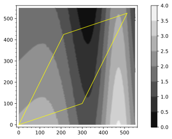
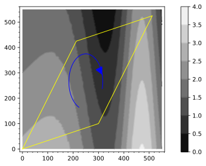
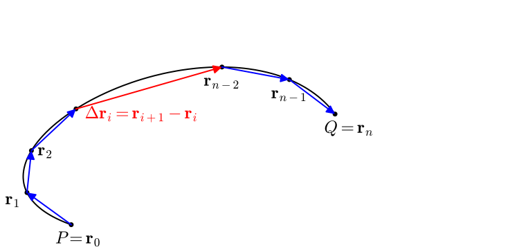
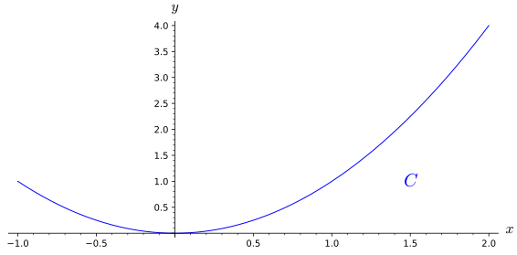
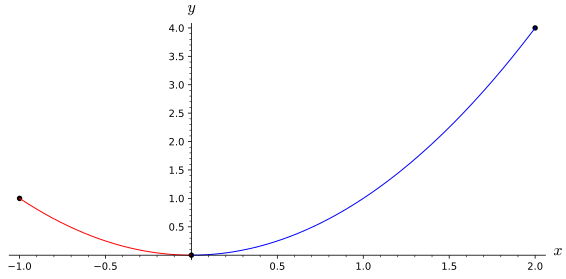
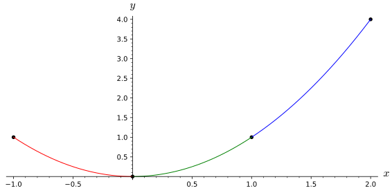
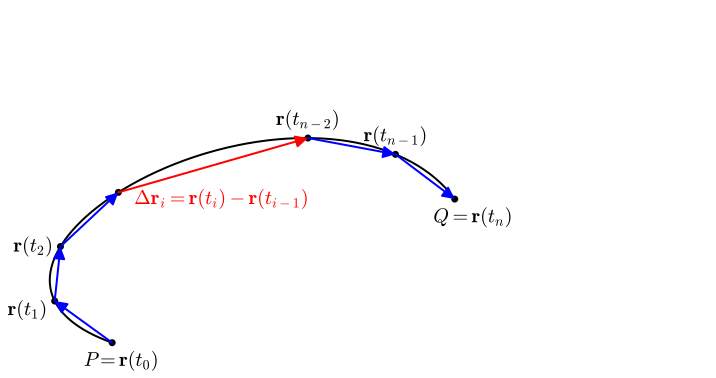
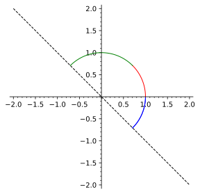
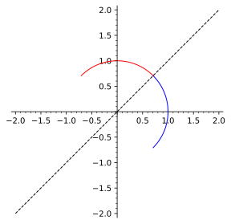
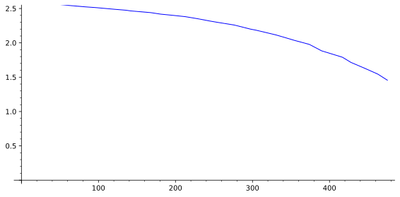

How can you measure the accumulation of a scalar function over a curve in space?
How can you efficiently calculate the scalar line integral over a curve in space?
In Section 12.2, the idea of a line integral was introduced by looking at the work done by a vector field when traveling along \(C\text{,}\) a path in space. In particular, the line integral measured the accumulated amount of the vector field that is along the path \(C\) (in the direction of travel.) Definition 12.2.9 shows how to use a Riemann sum to measure the accumulation of the vector field in the direction of travel along the given curve. Additionally, Theorem 12.3.5 shows how the line integral \(\int_C \vF\cdot d\vr \) can be efficently calculated in terms of the vector field and the derivative of any paramaterization of \(C\text{.}\) Philosophically, the Riemann sum in Definition 12.2.9 is adding up the scalar function given by the dot product of the vector field and the unit vector in the direction of travel (along the curve).
We will devote the rest of this section to answering these questions about generalizing the ideas of line integrals as fully as possible.
How can we measure the accumulation of a scalar valued function along a curve in space?
What would that accumulation measure physically?
What is the most efficent way to calculate this accumulation?
Preview Activity12.5.1.
In order to pay for tutition, you take a job driving a mining machine that collects a very valuable mineral called Copium. Copium is only produced on the surface and is mined by scooping up the soil at the front of your machine, so the amoung of copium ore collected depends on the density of the ore and the distance driven by the mining machine. The plot of land you are mining has been surveyed for the density of copium ore and is presented in the contour plot below.

Figure12.5.1.A plot of land with density of Copium deposits
(a)
Estimate the amount of Copium that would be mined from driving along the left side of plot. You should write a few sentences about how you got your estimate based on the copium density and length of the path. (Did you use more than one piece?)
Estimate the amount of Copium that would be mined by driving along the entire outer edge of the plot. You should write a few sentences about how you got your estimate based on the Copium density and length of the paths.
Estimate the amount of Copium that would be mined from the scraping the path given below (shown graphically in blue.) You should use at least 3 segments in your estimate. You should write a few sentences about how you got your estimate based on the copium density and length of the paths.
Figure12.5.2.A plot of land with Copium Density and a path plotted in blue
Estimate the amount of copium that would be mined from the scraping the path given below (shown graphically in blue.) You should use at least 3 segments in your estimate. You should also explain how and why your answer to this question is different or similar to the previous task.

Figure12.5.3.A plot of land with Copium Density and a path plotted in blue
Subsection12.5.1Defining line integrals of scalar functions
In Preview Activity 12.5.1, you approximated the distance traveled for various paths and multiplied by the density of the Copium on each piece of the path. In contrast to the line integral of a vector field, the calculations of the ore mined does not depend on what direction the path was traveled. We will now use these same ideas to give precise meaning to the measurement of the acculumation of a scalar function’s output over a path in space.
Let \(f\) be a contiunuous function of \(x\text{,}\)\(y\text{,}\) and \(z\) for some open set around \(C\text{,}\) a curve from a point \(P\) to a point \(Q\text{.}\) We will begin to approximate the acculumlation of the output of \(f\) over \(C\) by breaking \(C\) into pieces with boundary points \(P=r_0, r_1, ..., r_n-1, r_n=Q\text{.}\) The curve \(C_i\) is the part of \(C\) that goes from \(\vr_{i-1}\) to \(\vr_i\) and \(\Delta \vr_i\) is the displacement vector from \(\vr_{i-1}\) to \(\vr_i\)

Figure12.5.4.A curve in space with segments given by \(\mathbf{r}_i\)
We can approximate the accumulation of \(f\) over \(C\) with the following sum:
where \(f(r_i^{*})\) is the output of \(f\) for some \(r_i^{*} \in C_i\text{.}\) As this sum uses more pieces and all of the lengths of the pieces goes to zero (i.e. \(\Vert{\Delta \vr_i}\Vert \rightarrow 0\)), we would expect that the sum will approach the actual acculumation of \(f\) over \(C\text{.}\) Notice that it won’t matter how we select the point \(r_i^*\) that is used in each piece to evaluate the output of \(f\) since evaluating the limit as the length of \(C_i\) gets smaller will ensure that the output value choosen will be within a shrinking error from the average value on each piece. Evaluating the limit of the sum above as the size of all of the pieces goes to zero will transform our Riemann sum into an integral that will measure the accumulation of the output of \(f\) over \(C\text{.}\)
Definition12.5.5.The Line Integral of a Scalar Function.
Let \(f\) be a contiunuous function of \(x\text{,}\)\(y\text{,}\) and \(z\) for some open set around \(C\text{,}\) a curve from a point \(P\) to a point \(Q\) in space. The line integral of \(f\) over \(C\) is defined as
\begin{equation*}
\int_C f ds =\lim_{n\rightarrow \infty} \sum_{i=1}^{n} f(r_i^{*}) \Vert{r_{i}-r_{i-1}}\Vert
\end{equation*}
where \(r_i\) are points such that \(P=r_0, r_1, ..., r_n-1, r_n=Q\) and as \(n\rightarrow \infty\) the distance between \(r_{i-1}\) and \(r_i\) goes to zero.
The integral
\begin{equation*}
\int_C f \enspace ds
\end{equation*}
is called the scalar line integral of \(f\) over the curve \(C\text{.}\)
The notation for a scalar line integral (\(\int_C f \enspace ds \)) may not immediately make sense. As with the other types of integration we have done (double integrals, line integrals of vector fields, single variable integration, etc.), the subscript of the integral symbol denotes the region of integration. In the case of a scalar line integral, the region of integration is a collection of points given by a curve in space. The function we are integrating is \(f\text{,}\) a scalar-valued functiton of multiple variables. The differential \(ds\) probably looks suspicious to you. If you remember from Section 9.8, \(s\) is the arc length of a curve in space. So the differential \(ds\) in the scalar line integral notation means that we are adding up the output of \(f\) over steps in arc length. This should make sense in terms of how we set up our Riemann sums. We did not set up the pieces of our curve as steps in \(x\text{,}\)\(y\text{,}\) or \(z\text{,}\) but rather as steps in arc length (estimated by \(\Vert{r_{i+1}-r_{i}}\Vert\)).
Example12.5.6.
In this example we will make arguments about the line integral of the following scalar functions will be positive, negative, or zero. For all of this example, we will use the curve \(C\) given by \(y=x^2\) for \(x \in [-1,2]\text{.}\)
\(\displaystyle f(x,y)=x\)
\(\displaystyle g(x,y)=-y\)
\(\displaystyle h(x,y)=y-x^2\)

Figure12.5.7.The curve \(C\) used in the line integral for Example 12.5.6
(a)
For our first case, we will consider the line integral
\begin{equation*}
\int_C f \enspace ds \text{.}
\end{equation*}
Remember that the line integral of \(f\) over \(C\) will measure the accumulation of the output of \(f\) over the points on the curve \(C\text{.}\)Figure 12.5.8 shows that the blue branch of the curve \(C\) will have positive output and the red part will have negative output for \(f\text{.}\) Intuitively, there is more of the curve with positive \(f\) outputs than negative \(f\) outputs, so we would expect \(\int_C f \enspace ds\) to be positive.

Figure12.5.8.The curve \(C\) split into regions with positive (blue) and negative (red) outputs of \(f\)
If we break our region \(C\) into three pieces as shown in Figure 12.5.9, we can make a rigourous argument about why the result of \(\int_C f \enspace ds\) will be positive. We will call the red, green, and blue sections of Figure 12.5.9\(C_1\text{,}\)\(C_2\text{,}\) and \(C_3\) respectively. So in the notation of Assemblage , \(C = C_1+C_2+C_3\text{.}\) No matter how we break up the curve \(C_1\) to set up a Riemann sum used in Definition 12.5.5 we can do the symmetric version on curve \(C_2\text{.}\) The only difference between the Riemann sums and thier associated line integrals for \(C_1\) and \(C_2\) will be the sign on the output of \(f\text{.}\) This means that
\begin{equation*}
\int_{C_1} f \enspace ds = -\int_{C_2} f \enspace ds
\end{equation*}
and thus
\begin{gather*}
\int_C f \enspace ds = \int_{C_1} f \enspace ds + \int_{C_2} f \enspace ds +\int_{C_3} f \enspace ds \\
=-\int_{C_2} f \enspace ds + \int_{C_2} f \enspace ds +\int_{C_3} f \enspace ds = int_{C_3} f \enspace ds
\end{gather*}

Figure12.5.9.The curve \(C\) split into three regions with positive (blue and green) and negative (red) outputs of \(f\)
The argument for why \(\int_{C_1} f \enspace ds = \int_{C_2} f \enspace ds\) requires that both the points on the curves \(C_1\) and \(C_2\) and the output of \(f\) on those parts is symmetric. In [cross-reference to target(s) "sli_caution" missing or not unique] you will see examples where having only one part of this symmetry is not sufficent to make this type of argument.
We have shown that \(\int_C f \enspace ds = int_{C_3} f \enspace ds \) and want to demonstrate why \(int_{C_3} f \enspace ds \) will be positive. Because the output of \(f\) is positive for all of the points on the curve \(C_3\text{,}\) all elements of the associated Riemann sum in Definition 12.5.5 will be positive (the length of the displacement vectors and corresponding arc lengths are always positive). Thus \(\int_C f \enspace ds = int_{C_3} f \enspace ds \gt 0\text{.}\) This argument would work well for any curve that was only in the first and second octants because the outpuf of \(g\) for all of those points would be negative.
(b)
We now want to consider whether \(\int_C g \enspace ds \) will be positive, negative, or zero. This is a simpler argument than in the previous case because the output of \(g\) will be negative for all points in \(C\) (execept for the origin). Each term in the Riemann sum used to define the scalar line integral will be the product of a negative value (\(g(r_i^{*})\)) and a positive value (\(\Vert{r_{i}-r_{i-1}}\Vert\)). Therefore the Riemann sums will be negative and the limit as you take more terms in this sum will also be negative. Thus, \(\int_C g \enspace ds \lt 0\text{.}\)
(c)
For our last case we want to make an argument whether \(\int_C h \enspace ds\) will be positive, negative, or zero. While we cannot lean on the intuitive nature of the where coordinates are positive or negative, we can make a very precise argument about the output of \(h\) for the points on \(C\text{.}\) While \(g(x,y)=y-x^2\) will have a range that includes all real numbers, the output of \(g\) is always zero for the points on our curve \(C\) because for points on \(C\text{,}\) the \(y\)-coordinate is equal to the \(x\)-coordinate squared. This means that no matter how we break up our segments for the Riemann sum, the \(h(r_i^{*})\) terms will always be zero. No matter how many terms are used the Reimann sum will be zero, and the limit of the Riemann sums will also be zero. Thus, \(\int_C h \enspace ds=0\text{.}\)
Activity12.5.2.
In this activity, we will be making sense of scalar line integrals by examining a few common functions and justifying whether the scalar line integrals given are positive, negative, or zero. Let the functions \(f_1\text{,}\)\(f_2\text{,}\)\(f_3\text{,}\) and \(f_4\) be defined as
\(\displaystyle f_1(x,y,z)=y\)
\(\displaystyle f_2(x,y,z)=z\)
\(\displaystyle f_3(x,y,z)=x-y\)
\(\displaystyle f_4(x,y,z)=x^2\)
(a)
For each of the paths given below, sketch (in either 2D or 3D) the curve and label at least three points on the curve including the end points (if they exist).
\(C_1\) is the part of the unit circle (in the \(xy\)-plane centered at the origin) that is above the line \(y=-x\)
\(C_2\) is the part of the unit circle (on the plane \(z=x\) centered at the origin) with \(y \geq -x\)
\(C_3\) is the part of the helix given by \(\vr(t)=\langle cos(t),sin(t),\frac{t}{2 \pi}\rangle\) with \(t \in [0,\pi]\)
For each of the functions \(f_1\text{,}\)\(f_2\text{,}\)\(f_3\text{,}\) and \(f_4\) (defined above), state whether \(\int_{C_1} f_i \enspace ds \) is positive, negative, or zero. Be sure to justify your answer in terms of the function being integrated and the particulars of the region of integration.
For each of the functions \(f_1\text{,}\)\(f_2\text{,}\)\(f_3\text{,}\) and \(f_4\) defined above, state whether \(\int_{C_2} f_i \enspace ds \) is positive, negative, or zero. Be sure to justify your answer in terms of the function being integrated and the particulars of the region of integration.
For each of the functions \(f_1\text{,}\)\(f_2\text{,}\)\(f_3\text{,}\) and \(f_4\) defined above, state whether \(\int_{C_3} f_i \enspace ds \) is positive, negative, or zero. Be sure to justify your answer in terms of the function being integrated and the particulars of the region of integration.
Subsection12.5.2Using Parameterizations to Calculate Scalar Line Integrals
Definition 12.5.5 defined \(\int_C f \enspace ds\) in terms of a limit of a Riemann sum which is usually very useful for understanding what is being measured and not very useful when it comes to efficiently calculating the value of a given integral. A scalar line integral is presented algebraically in terms of three variables because the curve is given in terms of points in three coordinates and the function to be integrated is dependent on those same coordinate values. Geometrically, the scalar line integral is a one dimensional problem because we only have one dimension to travel; namely we can travel along the curve (in steps of arc length). Remember that a parameterization of a curve in space is a description of how to travel through the \(x\text{,}\)\(y\text{,}\) and \(z\) points of the curve in terms of a parameter (usually given as \(t\text{.}\)) Parameterizations are very useful converting the three-variable algebra of a scalar line integral problem into a one dimensional integral.
Let’s look at applying a parameterization for \(C\) (given by a vector valued function of one variable \(r(t)=\langle f(t), g(t), h(t)\rangle\) for \(t\) in some interval \([a,b]\)) to Definition 12.5.5. Instead of thinking in terms of pieces of the curve \(C\text{,}\) the parameterization allows us to break the interval \([a,b]\) into pieces \(a=t_0, t_1, ... ,t_n=b\) where \(t_i=a+i(\Delta{t})\) and \(\Delta{t}=\frac{b-a}{k}\text{.}\) While these pieces will be equally spaced in terms of the parameter \(t\text{,}\) the corresponding points on the curve \(C\) given by \(r(t_i)\) will not be equally spaced.

Figure12.5.10.The curve \(C\) split into segments defined by equally spaced parameter values
We can simplify the notation of our function evaluation as follows:
where \(t_i^{*} \in [t_i,t_{i+1}]\text{.}\) Remember that the parameterization will allow us to write all parts of the scalar line integral as a function of \(t\text{,}\) so we will simplify \(\Vert{r_{i+1}-r_i}\Vert\) as follows:
This is the Riemann Sum of a scalar function of \(t\text{,}\) specifically \(f(t) v(t)\) where \(v(t)=\frac{d\Vert{r}\Vert}{dt}\) (\(v(t)\) is the speed of the parameterization \(r\)).
Theorem12.5.11.Calculating Scalar Line Integrals with Parameterizations.
Let \(f(x,y,z)\) be a continuous multivariable function for a region around \(C\text{,}\) a curve in space parameterized by \(r(t)\) for \(t \in [a,b]\text{.}\)
Let us return to some of the problems from Activity 12.5.2. Specifically, let \(C_1\) be part of the unit circle on the \(xy\)-plane that is centered at the origin and is above the line given by \(y=-x\text{.}\) We will also consider \(f_1(x,y,z)=y\text{.}\) We can parameterize \(C_1\) by \(r(t)=\langle \cos(t), \sin(t), 0 \rangle\) with \(t \in [-\frac{\pi}{4},\frac{3\pi}{4}]\text{.}\) Note here that \(\Vert{\frac{dr}{dt}}\Vert =\Vert{\langle -\sin(t),\cos(t),0\rangle}\Vert=1\text{.}\) We can rewrite the output of \(f_1\) along \(C_1\) using the parameterization as \(f_1(x(t),y(t),z(t))=f_1(\cos(t),\sin(t),0)=\sin(t)\text{.}\) Applying Theorem 12.5.11, we get
This result should make sense from your earlier explainations of Task 12.5.2.b. Specifically, we can break the line integral of \(f_1\) into three parts according to the following plot.

Figure12.5.13.A subdivided plot of \(C_1\)
The scalar line integal on the blue and the red paths will cancel each other out exactly since the paths are symmetric about \(x\)-axis and the output of \(f_1\) will be opposite in sign on the blue and red. This means that \(\int_{C_1} f_1 \enspace ds\) will be the same as the line integral of \(f_1=y\) on the green path. Since the output of \(f_1\) is positive on the green path, our result for the scalar line integral should be positive.
Example12.5.14.
Let \(C_1\) be part of the unit circle on the \(xy\)-plane that is centered at the origin and is above the line given by \(y=-x\text{.}\) We will also consider \(g(x,y,z)=x-y\text{.}\) We can parameterize \(C_1\) by \(r(t)=\langle \cos(t), \sin(t), 0 \rangle\) with \(t \in [-\frac{\pi}{4},\frac{3\pi}{4}]\text{.}\) Note here that \(\Vert{\frac{dr}{dt}}\Vert =\Vert{\langle -\sin(t),\cos(t),0\rangle}\Vert=1\text{.}\) We can write the output of \(g\) along \(C_1\) using the parameterization as \(g(x(t),y(t),z(t)) = g(\cos(t),\sin(t),0) = \cos(t)-\sin(t)\text{.}\) Applying Theorem 12.5.11, we get
This result should make sense from your earlier explainations of Task Task 12.5.2.b. Specifically, we can break the line integral of \(f_1\) into three parts according to the following plot.

Figure12.5.15.A subdivided plot of \(C_1\)
The scalar line integal on the blue and the red paths will cancel each other out exactly since the paths are symmetric and the output of \(g\) will be opposite in sign on the blue and red. Thus the line integral of \(g\) over \(C_1\) will be zero.
Subsection12.5.3Properties of Scalar Line Integrals
Before stating some useful properties of scalar line integrals, we will recall some convenient notation from Assemblage . If \(C_1\) and \(C_2\) are oriented curves, with \(C_1\) from a point \(P\) to a point \(Q\) and \(C_2\) from \(Q\) to a point \(R\text{,}\) we denote by \(C_1+C_2\) the oriented curve from \(P\) to \(R\) that follows \(C_1\) to \(Q\) and then continues along \(C_2\) to \(R\text{.}\) Also, if \(C\) is an oriented curve, \(-C\) denotes the same curve but with the opposite orientation. The list below summarizes some other properties of line integrals, each of which has a familiar in definite integrals.
Properties of Scalar Line Integrals.
For a constant scalar \(k\text{,}\) scalar valued functions\(f\) and \(g\text{,}\) and oriented curves \(C\text{,}\)\(C_1\text{,}\) and \(C_2\text{,}\) the following properties hold:
\(\displaystyle \displaystyle \int_C (k f) \enspace ds = k \int_C f \enspace ds\)
\(\displaystyle \displaystyle \int_C (f+g) \enspace ds = \int_C f \enspace ds + \int_C g \enspace ds \)
\(\displaystyle \displaystyle \int_{-C} f \enspace ds = \int_C f \enspace ds\)
\(\displaystyle \displaystyle \int_{C_1+C_2} f \enspace ds = \int_{C_1} f \enspace ds + \int_{C_2} f \enspace ds\)
The biggest difference bewteen Assemblage and Assemblage is part c. The orientation of the curve does not change the value of the scalar line integral. Activity 12.5.3 will have you make sense of these rules for scalar line integrals.
Activity12.5.3.Explaining Properties of Scalar Surface Integrals.
In this activity, we will be explaining each of the Properties from Properties of Scalar Line Integrals in the context of our Copium mining analogy from Preview Activity 12.5.1. Remember that the curve in our scalar line integral cooresponds to the path the mining rig will take and the function in the scalar line integral measures the density of Copium at that point on the surface.
(a)
Explain in your own words what \(\int_C f \enspace ds\) means in the Copium analogy and what exactly would be measured by this scalar line integral.
The scalar line integral \(\int_C f \enspace ds\) would calculate the accumulation of Copium mined along the path given by \(C\) where \(f\) gives the density of Copium at each location in the area. In particular, \(\int_C f \enspace ds\) measures the total Copium mined along the path \(C\text{.}\)
(b)
Explain in your own words what \(\displaystyle \int_C (k f) \enspace ds = k \int_C f \enspace ds\) means in the Copium analogy. It may be helpful to describe each side of the equation separately and say why they are equal in the analogy.
(c)
Explain in your own words what \(\displaystyle\int_C (f+g) \enspace ds = \int_C f \enspace ds + \int_C g \enspace ds\) means in the Copium analogy. It may be helpful to describe each side of the equation separately and say why they are equal in the analogy.
(d)
Explain in your own words what \(\displaystyle\int_{-C} f \enspace ds = \int_C f \enspace ds\) means in the Copium analogy. It may be helpful to describe each side of the equation separately and say why they are equal in the analogy.
(e)
Explain in your own words what \(\displaystyle\int_{C_1+C_2} f \enspace ds = \int_{C_1} f \enspace ds + \int_{C_2} f \enspace ds\) means in the Copium analogy. It may be helpful to describe each side of the equation separately and say why they are equal in the analogy.
Subsection12.5.4Visualizations of Scalar Line Integrals as Area Under a Curve
We will spend the last part of this section talking about a way to try to visualize the scalar line integral as an area under a curve (in the same way that we visualized 1D integrals.) Let’s return to our Copium analogy from Preview Activity 12.5.1. In particular, we can look the left side of the mining area.
Figure12.5.16.A plot of land with density of Copium deposits
In particular, we could visualize the linear density of Copium along the left side of the area using a plot like Figure Figure 12.5.17.

Figure12.5.17.A plot of the Copium density on the left side of the mine shown above
In Figure 12.5.17, the horizontal axis gives the distance traveled along the left side of Figure 12.5.1. Because this is a stright path, we could plot the density above the path of the Copium mining plot. In fact, we could plot the density above the plot for all of the sides of the mining plot.
Figure12.5.18.A three-dimensional plot of the Copium Density plotted for the edges of the mining area
Figure 12.5.18 shows the Copium Mine plot (in gray) and the paths that are the boundary of the plot in red. The curve in green shows the Copium Density at each point on the boundary of the mine plot. The area in yellow would be the scalar line integral for the path that is the boundary of the mine plot. In particular, the area in yellow would give the total Copium mined from driving our mining machine around the boundary of the mine plot.
Because the curve we are looking at in Figure 12.5.18 involves straight lines and simple heights, there is no confusion when looking at this plot and using an area under the curve analogy. What if we looked at the scalar line integral of a function like \(f(x,y,z)=x-y\) along the helix given below?
Figure12.5.19.A three-dimensional plot of a helix
You can already see part of the problem involved here since if we used the \(z\)-coordinate to plot the output of our scalar function, then our area might intersect other parts of the curve. The plot below shows the confusing plot we would have if we looked at \(f(x,y,z)=x-y\) as the height above our curve in blue.
Figure12.5.20.A three-dimensional plot of a helix with height given by \(f(x,y,z)=x-y\)
Subsection12.5.5Summary
The scalar line integral, denoted by \(\int_C f \enspace ds \text{,}\) measures the acculumation of the output of \(f\) over the points on the curve \(C\text{.}\)
Parameterizing the curve used in a scalar line integral allows you to compute the scalar line integral as a definite integral of 1-variable (the parameter).
Scalar line integrals can be split into pieces of the curve or along linear combinations of the scalar valued function being integrated.
Exercises12.5.6Exercises
1.
Compute
\begin{equation*}
\int_C f ds
\end{equation*}
where \(f(x,y)=\frac{y^3}{x^7}\) and \(C\) is the curve given by \(y=\frac{1}{4} x^4\) for \(1 \leq x\leq 2\text{.}\)
2.
Let \(C\) be the path given below from \(P\) to \(Q\) with pieces \(C_1\text{,}\)\(C_2\text{,}\) and \(C_3\) as labeled. Let \(f\) be a scalar-valued function such that \(\int_C f \enspace ds = 13\text{,}\)\(\int_{C_1} f \enspace ds = 5\text{,}\)and \(\int_{C_3} f \enspace ds = 9\text{.}\)
Figure12.5.21.
Find the following:
\(\displaystyle \int_{-C_3} f \enspace ds \)
\(\displaystyle \int_{C_2} f \enspace ds \)
\(\displaystyle \int_{-C_1-C_3} f \enspace ds \)
3.
Calculate the following line integral where \(C\) is the path on \(x=y\) with \(-1 \geq y \geq 2 \text{:}\)